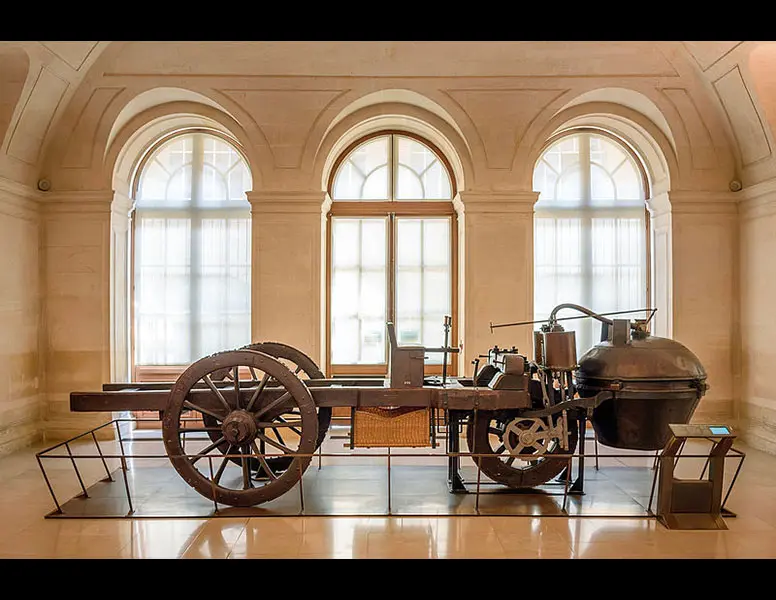

Estudiante: Ricardo Eleazar Reyes Amestica
1° Medio — Tecnología | Liceo Bicentenario Industrial Metodista
Línea del Tiempo: La Evolución del Automóvil
Análisis de las transformaciones del transporte autopropulsado.
1769
El Primer Automóvil a Vapor

Nicolas-Joseph Cugnot diseñó el primer vehículo autopropulsado mediante un motor de vapor de dos cilindros verticales.
Razón (Militar): Urgencia de trasladar artillería pesada sin tracción animal.
🔍 Clic para expandir
1886

Motor de Combustión Interna
Karl Benz patenta el primer vehículo con motor de combustión interna a gasolina de cuatro tiempos.
Razón (Industrial): Avances en termodinámica y refinación de petróleo.
🔍 Clic para expandir